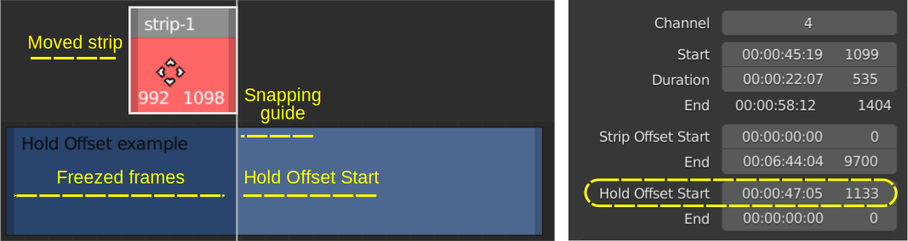

2.2.1.5. Move¶
タイムライン内でストリップを移動することは、もちろんビデオ編集の基本的な操作です。 図 1 は、いくつかの可能性を示しています。左側の黄色のストリップ (1) を、左側の赤と緑のストリップの上にドラッグします。リリースする前に、クロス移動?? を伴うストリップ (2) が一時的に表示されます。選択したオプション (shuffle、overwrite、または expand) に応じて、ストリップ (3)、(4)、または (5) が結果となります。
図1 シーケンサーでのストリップの移動¶
- LMB - drag
1 つまたは複数のストリップを選択し、新しい場所にドラッグできます。 LMB を放すと、ストリップが新しい位置に配置されます。 Escape や RMB (LMB を押したまま）を押すと、移動がキャンセルされます。 ドラッグを開始した瞬間から、Grap 操作 (以下を参照) が開始され、新しいオプションが使用可能になります。
- Grab
図1 では、黄色のストリップが選択されており、 G キーを押すとストリップが grap されます。 ステータス バーがいくつかのオプションとともに表示され、ヘッダーが一時的にメッセージ (シーケンス スライド: 0,0) に置き換えられ、カーソルの形状が移動アイコンに変わり、開始フレームと終了フレームがストリップ内に表示されることに注意してください。 これらはすべて、Grap モードであることを示すサインです。
Grab または G コマンドは Blender で共通であり、ほとんどのエディターで同じように機能します。 メニューからアクセスすることもできます: [Strip] > [Transform] > [Move]。
1 つまたは複数のストリップを選択します。それらは異なるチャネルに存在する可能性があります。さまざまな方法については selecting セクション を参照してください。マウスで選択した場合は、マウス ボタンを放しても問題ありません。
G を押します。マウス ポインタの位置は関係ありませんが、移動するストリップの上にマウスを置くことをお勧めします。移動アイコンはストリップ バーにうまく追従します。
マウスを水平、垂直、またはその両方に動かします。ストリップ バーは、次に利用可能なチャンネルにジャンプし、既存のストリップの上に配置されます。境界線を越えて移動することもできます (ただし、ストリップをどこにドロップされるかは確認する必要があります)。
Escape または RMB-Click を押してキャンセルするか、LMB-Click または Enter 押して操作を確定します。選択したストリップは新しい位置でロックされます。
- Grab - Shift
Shift ボタンを押したままストリップを移動すると、少しずつ移動します。最終的にはフレームごとに。増分サイズはズーム レベルによって異なります (ズームアウトするとステップが大きくなります)。
- Grab - Arrow Left/Right
LMB-drag または G のあと、 Arrow-Left または Arrow-Right で左右に 1 フレームずつ移動できます。この方法は、上矢印キーまたは下矢印キーを使用してチャネル番号を変更することはできません。
- Grab - number
G を押して、正の数値 X を押すと、ストリップが X フレーム右に水平に移動します。したがって、G 10 はストリップを 10 フレーム右に移動します。負の数を指定すると、ストリップが左に移動します。いつものように、Esc キーでキャンセルするか、Enter (クリック) で確定します。
- Grab - X/Y
水平 X 軸または垂直 Y 軸への移動を制限できます。したがって、Grab Y は、水平位置を変更せずに、選択したストリップを新しいチャンネルに垂直に移動します。
- Grab - X/Y - number
前の 2 つのコマンドを結合します。したがって、GY 2 はストリップを 2 チャンネル上に移動し、GX -10 はストリップを 10 フレーム左に移動します。
移動範囲を秒単位で指定したい場合は、いつでも必要な計算を入力できます。プロジェクトの fps = 24 があり、ストリップの 5 秒間の移動は GX 5**24 によって行われるとします。乗算記号 (**) を 2 回タップする必要があります。
2.2.1.5.1. Snapping¶
{kind=link}
シーケンサー内にストリップが 1 つしかない場合は、そのストリップを自由に移動でき、スナップは発生しません。 ただし、ほとんどの場合はそうではなく、スナップが発生する可能性があります。 移動するストリップが突然別のストリップにクランプ(固定)され、エッジが連続するフレーム上で位置合わせされます。これは、これらのエッジが 15 ピクセル未満の距離内にある場合に常に発生します。
スナップは Playhead でも発生する可能性があります。次に、エッジの 1 つが 15 ピクセルの距離内にある場合は常に、移動ストリップが Playhead と位置合わせされます。
スナップは、 ストリップを移動する か、ハンドルを移動する こと（つまり、ストリップの持続時間を変更すること） によって誘発することができます。スナップは細い白い線で視覚化できます。ヘッダーの中央にある磁石のアイコンをクリックして、スナップ ガイドをオンにします。ショートカット キー Shift-Tab を使用して 切り替えることもできます (図 2)。
Ctrl キーを押したままストリップを移動すると、スナップの有無 も切り替わります。したがって、[Use Snapping] が有効になっている場合は、 Ctrl キーを押したままにしてストリップを移動している間、スナップを一時的に無効にすることができますCtrl。
スナップ ガイドは、移動するストリップのエッジが別のストリップのエッジに近い (< 15 ピクセル) 場合に表示されます (図2)。すべてのチャネルが考慮されます。そのため、混雑したシーンでは、多数のスナップ ガイドが存在する可能性があります (ただし、15 ピクセル以内のガイドのみが表示されます)。
図3 スナップ ガイド¶
図 3 は、3 本のストリップを備えたすべての可能なスナップ ガイドを示しています。上のパネルは、元の状況 (ストリップ 3 を移動する前) を表します。他に 2 つのストリップがあるため、スナップする可能性は 8 つあります。ストリップ 3 の開始フレームは、ストリップ 2 の開始フレームと終了フレームにスナップできます。終了フレーム (= 4 つの可能性、図 2 の中段) も同様です。同じ理由がストリップ 1 のエッジにも当てはまります (図 2 の下の行)。
ストリップ 3 の開始フレームがストリップ 2 の終了フレームにスナップされます。結果: ストリップ 3 がストリップ 2 に追加されます。実はこれが本来の状況なのです。ストリップ 2 の右側にはストリップがないため、これは正当な動きであり、ストリップ 3 の境界線は白で色付けされます。
ストリップ 3 の終了フレームがストリップ 2 の終了フレームにスナップされます。これにより、strip-2 の上書きが発生する可能性があります。したがって、strip-3 の境界線は赤色になります。結果: d1 > d2 のため、ストリップ 3 は次の利用可能な位置、ストリップ 2 の終了フレームに移動します。
ストリップ 3 の開始フレームがストリップ 2 の開始フレームにスナップされます。これもまた違法な操作です。したがって境界線は赤になります。d1 < d2 であるため、ストリップ 2 はストリップ 2 の前に配置されるはずです。しかし、十分なスペースがありません> ため、strip-3 は元の場所に戻されます。
ストリップ 3 の終了フレームがストリップ 2 の開始フレームにスナップされます。ストリップ 1 とストリップ 2 の間のギャップがストリップ 3 を保持できるほど十分に大きい場合、これは正常な動作である可能性があります。残念ながら、そうではありません。したがって、ストリップ 3 の境界線は赤に色付けされ、ストリップは再びストリップ 2 の最後に追加されます。
ストリップ 3 の開始フレームがストリップ 1 の終了フレームにスナップされます。(d) と同様、これは通常の動作である可能性がありますが、やはりギャップは十分大きくありません。したがって、ストリップ 3 はストリップ 2 の最後に再び移動され、境界線は赤色になります。
ストリップ 3 の終了フレームがストリップ 1 の終了フレームにスナップされます。ストリップ 1 が上書きされる可能性があるため、これは不正な操作です。境界線は赤く色付けされます。d1 > d2 であるため、strip-1 の最後に移動する必要があります。しかし、十分なスペースがありません。したがって、反対側が試行され、成功します。
ストリップ 3 の開始フレームがストリップ 1 の開始フレームにスナップされます。Strip-1 は上書きされる可能性があります。したがって、strip-3 の境界線は赤になります。その結果、d1 < d2.> であるため、ストリップ 3 はストリップ 1 の前に移動されます。
ストリップ 3 の終了フレームがストリップ 1 の開始フレームにスナップされます。ストリップ 1 の前には十分なスペースがあります。したがって、これは通常の動作である可能性があります (白い枠線)。ストリップ 3 はストリップ 1 の前に移動されます。
たとえば、図 3-d と 3-e のスナップ ガイドは、移動したストリップがストリップ 1 とストリップ 2 の間に挿入されることを暗示しているように見えるのは、少し混乱します。上で説明したように、拡張モードを有効にしない限り、これは当てはまりません(後述)。
スナップ ガイド ツールには 5 つのオプションがあります (図2)。
Current Frame: Playhead (= 現在のフレーム) は、スナップオンする補助エッジとしてカウントされます。したがって、移動するストリップは、別のストリップの端またはPlayheadのいずれか最も近い方にスナップできます。
Hold Offset: ストリップはホールド スプリット操作の結果である可能性があります (参照 Hold Split)。たとえば、図 4 では、最初の 250 フレームがフリーズされている間、ホールド オフセットの開始はフレーム 1133 にあります。
図 4: Hold Offset Start フィールドへのスナップ¶
Muted strips/Sound Strips: ストリップを移動するとき、ほとんどの場合、このストリップをミュート (非表示) またはサウンド ストリップにスナップする必要はありません。これらのオプションはデフォルトでは無視されませんが、ここでオンに切り替えます。
Current Frame: Snap to Strips: ストリップはスナップされませんが、スクラブ中に Playhead がストリップの端にスナップされます。これが起こるのを確認するには、低速でスクラブする必要があります。そうしないと、スナップが行われる前にエッジを超えてしまいます。
- Snap to the playhead
同じタイムラインでストリップをPlayheadに移動してスナップする特別なコマンドもあります。1 つまたは複数のクリップを選択します。複数のチャネルに拡散する可能性があります。 Shift-S 押すと、選択範囲が Playhead にスナップされます。
警告
複数のストリップが選択されている場合、それらはすべて Playhead から始まります。互いの相対位置は保持されず、すべてのストリップは異なるチャネルに分散されます (そうしないとオーバーラップしてしまうため)。スナップ オプションの [Expand] または [Overwrite] が選択されている場合でも同様です。このコマンドはおそらく、共通の開始フレームを共有するストリップにのみ役立ちます。例えば。ムービー ストリップとそれに付随するサウンド ストリップ。
2.2.1.5.2. Shuffle¶
デフォルトのシャッフル オプションが選択されている場合、ストリップを移動すると、ドロップされたストリップは常に別のストリップの前面または背面に追加され、ストリップの間に挿入されることはありません。
Conflict resolution
Shuffle オプション (デフォルト) が有効になっている場合、別のストリップと (部分的に) 重なるようにストリップを移動すると、移動中のストリップの周囲に一時的な赤い輪郭が作成され、ストリップをそこに移動できないことを示します (Extend や Overwrite でないため)、さらに離れて配置され、重なっているストリップの両側に配置されます。
どちら側に配置される？ 2 つの距離が計算されます。例えば。図 5 の d1 と d2。d2 は d1 より小さいため、移動するストリップ 1 はストリップ 2 + ストリップ 3 の最後に追加されます (スペースがある場合)。ストリップ 3 をストリップ 1 とストリップ 2 の間で移動することは、予測が少し難しくなります。d3 < d4 の場合、ストリップ 3 はストリップ 1 の前に配置されます。それ以外の場合は、strip-2 に追加されます。
図5 シャッフル オプションを使用してストリップを挿入することはできません。¶
移動するストリップの背景が別のストリップと重なる場合、その背景は半透明で描画されます。 特にOverwrite機能 (下記を参照) を使用する時に、下にあるものを確認するのに便利です。
2.2.1.5.3. Overwrite¶
上書きオプションはストリップの一部を置き換えます。図 1 では、黄色のストリップが赤と緑のストリップの上にドロップされ、それらの重なっている部分を置き換えます。警告は表示されませんが、もちろん操作を元に戻すこともできます。
複数のストリップをドロップできます。それぞれが、重なっているストリップの部分を上書きします。
2.2.1.5.4. Expand¶
Expand オプションはストリップを上書きすることはありませんが、ストリップが重なっている場合には、ストリップを所定の位置から移動します。図 1 では、ドロップされた黄色のストリップは、緑のストリップを右に移動することによって、元の赤と緑のシーケンスを拡張します。
ただし、操作の正確な結果はドロップ位置によって異なります。たとえば、黄色のストリップが赤のストリップの先頭にドロップされた場合、赤と緑のストリップは両方とも右に移動され、黄色のストリップがそれらの前に配置されます。黄色のストリップが緑のストリップの最後に削除された場合、既存の赤と緑のストリップの最後に追加されます。これがドロップされると (図 1 の例のように)、緑色のストリップが右に移動され、黄色のストリップが挿入されます。
Expand モードは、選択した複数のクリップでも機能します。移動するストリップ間にギャップがある場合、それらは保持されます。